Thailand Trav-E-Logs©
| Ayuthaya | 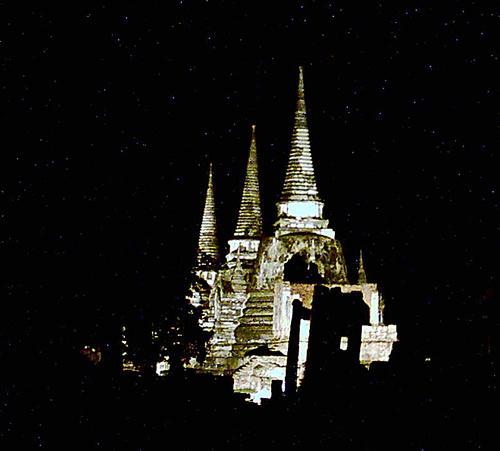 |
| back: Return to Bangkok | Ayuthaya by Night |
================================= Took a short trip up to the old Capital of Thailand and spent a few days taking in the sights. The walled city of Ayuthaya was the administrative center of Siam for over 400 years, so many ruins of temples, monasteries, and other religious structures can still be visited today. =================================
September 1 - 2, 2003
|
The easiest way to see this historic location is to rent a bicycle for a couple of days and enjoy the fresh air while peddling from sight to sight. Elephants were commonly used as a beast of burden during the Ayuthaya years, so visiting the corral northeast of town is part of the experience. Tony's Guest House offers a night tour of the ruins that are nicely illuminated at night. Tour includes a run down on the significance of several sites. Photos, clockwise from upper right: Wat Yai Chai Mongkhon, built in 1357; School Boys at Wat Phra Si Sanphet; Yai Chai Mongkhon; Buddha Head in Bodhi Tree; Ayuthaya Ruins by Night; Elephant Corral; Wat Thammikarat; Wat Mahathat; Wat Ratchaburana; Wat Chai Wattanaram. 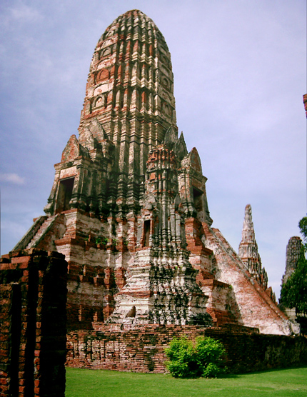 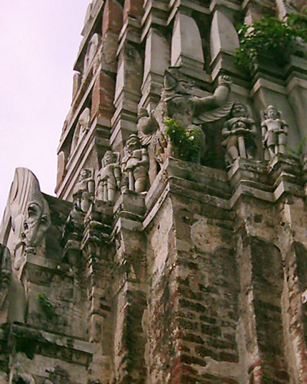 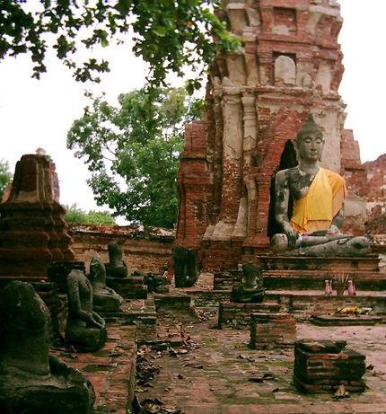 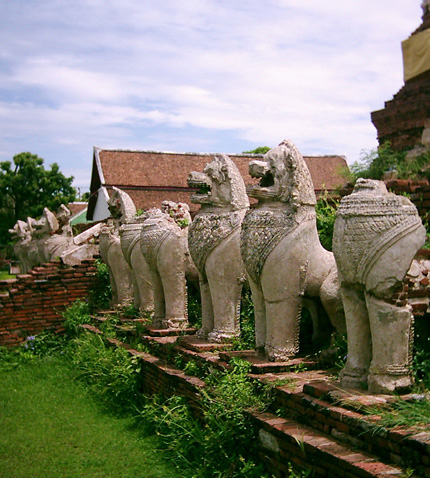 | 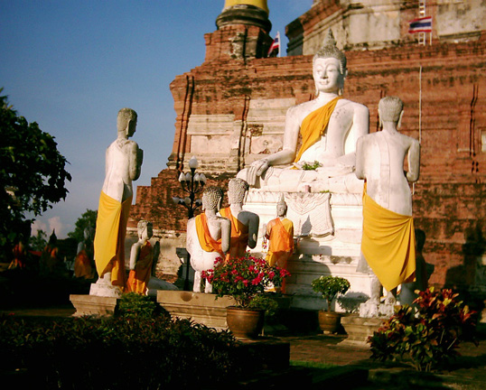 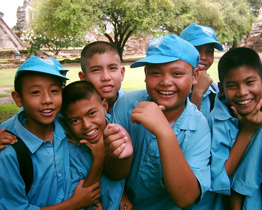 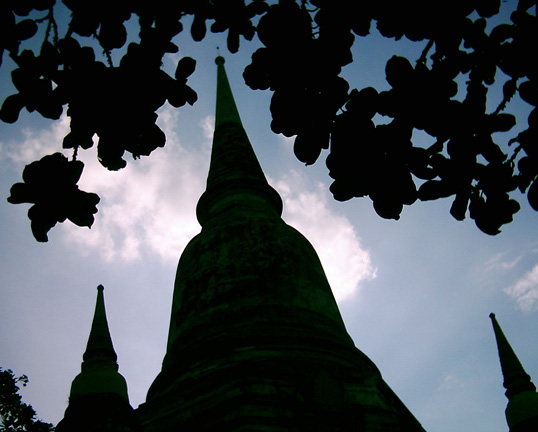 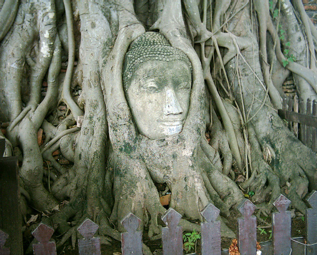 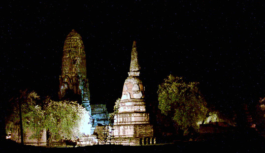 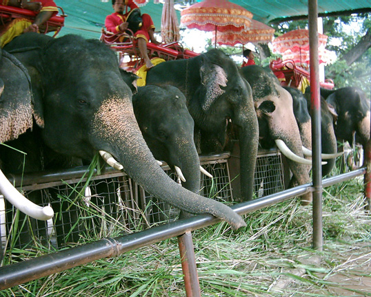 |
Enjoy!
Bill
------------------------------
Email me at: "juno.com" preceded by an "@" and "dancer2SEAsia"
"It you don't travel, you ain't seen nothin'."
| next: Kanchanaburi |
| back: Return to Bangkok |